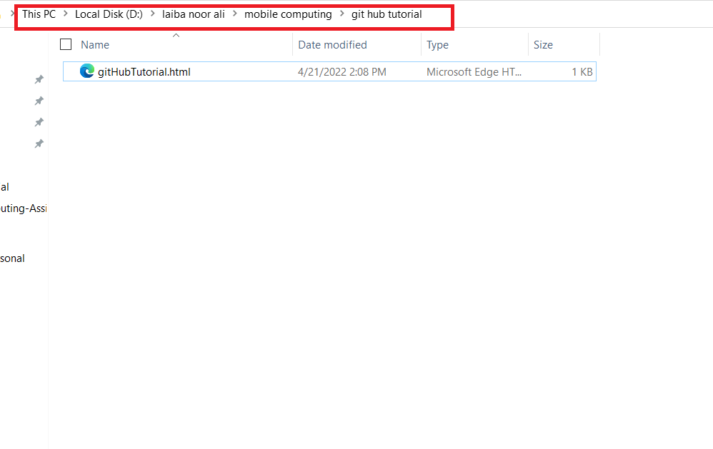

Create a git hub account and sign in using this link github
Create a text document and change its extension to .html

Write cmd in the address bar of the folde containing your html file

On the cmd window write the following command git init as shown below and hit enter

This step will initialise a git repository in your folder and then can be pushed on git hub
On the cmd window write the following command git init as shown below and hit enter
This step will initialise a git repository in your folder and then can be pushed on git hub
now you need to create a repository on git hub for this purpose click the '+' sign as shown below and create a repository.

This step will initialise a git repository in your folder and then can be pushed on git hub